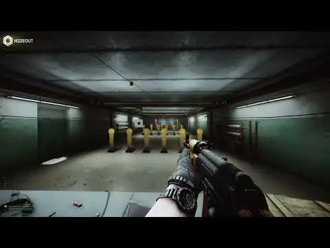

Recoil Rework (Legacy)
- Downloads
- 31,799
- Favourites
- 9
- Mod lists
- 16
Introduction
THE CITY’s recoil feels kind of bland and weightless. This (relatively) lightweight mod aims to make recoil punchier by tweaking some recoil values. While I am open to suggestions, this mod is ultimately shaped by my own preferences and is thus highly opinionated around what I would like THE CITY’s recoil to look and feel like. Feature requests are always welcome.
I encourage you to play around with various settings to see what suits you.
Preview

Somewhat outdated and not the best example of what’s possible with this mod. I’ll get around to making a better preview someday.
Installation
Drag and drop. Like any other mod.

A small list of mods I would recommend using alongside Recoil Rework:
… and a few others, but I’m gatekeeping them.
Realism & Recoil Rework
This mod is largely incompatible with Realism Mod’s recoil changes and causes weapons to go flying all over the screen when fired due to how Recoil Rework works. Because of this I would recommend not using this mod alongside Realism. Besides that Realism’s gunplay is great as is (thx fontaine)
However, if you REALLY want to use this mod with Realism then make sure to either edit the Recoil Rework config or disable Realism’s recoil changes within its server config. Good luck!
Version
1.10.0
- Recompiled for SPT 4.0.0
- Rewrote server mod
Version
1.9.1
- Fixed real recoil being frame rate dependent
- Hopefully fixed additional camera recoil frame rate dependency too
- Something else I think but I wouldn’t know
- Configs may feel different but should remain unbroken